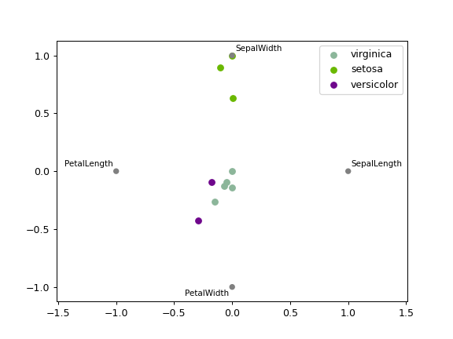

pandas.plotting.radviz¶
- pandas.plotting.radviz(frame, class_column, ax=None, color=None, colormap=None, **kwds)[source]¶
Plot a multidimensional dataset in 2D.
Each Series in the DataFrame is represented as a evenly distributed slice on a circle. Each data point is rendered in the circle according to the value on each Series. Highly correlated Series in the DataFrame are placed closer on the unit circle.
RadViz allow to project a N-dimensional data set into a 2D space where the influence of each dimension can be interpreted as a balance between the influence of all dimensions.
More info available at the original article describing RadViz.
- Parameters
- frameDataFrame
Object holding the data.
- class_columnstr
Column name containing the name of the data point category.
- ax
matplotlib.axes.Axes, optional A plot instance to which to add the information.
- colorlist[str] or tuple[str], optional
Assign a color to each category. Example: [‘blue’, ‘green’].
- colormapstr or
matplotlib.colors.Colormap, default None Colormap to select colors from. If string, load colormap with that name from matplotlib.
- **kwds
Options to pass to matplotlib scatter plotting method.
- Returns
- class:matplotlib.axes.Axes
See also
plotting.andrews_curvesPlot clustering visualization.
Examples
>>> df = pd.DataFrame( ... { ... 'SepalLength': [6.5, 7.7, 5.1, 5.8, 7.6, 5.0, 5.4, 4.6, 6.7, 4.6], ... 'SepalWidth': [3.0, 3.8, 3.8, 2.7, 3.0, 2.3, 3.0, 3.2, 3.3, 3.6], ... 'PetalLength': [5.5, 6.7, 1.9, 5.1, 6.6, 3.3, 4.5, 1.4, 5.7, 1.0], ... 'PetalWidth': [1.8, 2.2, 0.4, 1.9, 2.1, 1.0, 1.5, 0.2, 2.1, 0.2], ... 'Category': [ ... 'virginica', ... 'virginica', ... 'setosa', ... 'virginica', ... 'virginica', ... 'versicolor', ... 'versicolor', ... 'setosa', ... 'virginica', ... 'setosa' ... ] ... } ... ) >>> pd.plotting.radviz(df, 'Category') <AxesSubplot:xlabel='y(t)', ylabel='y(t + 1)'>
